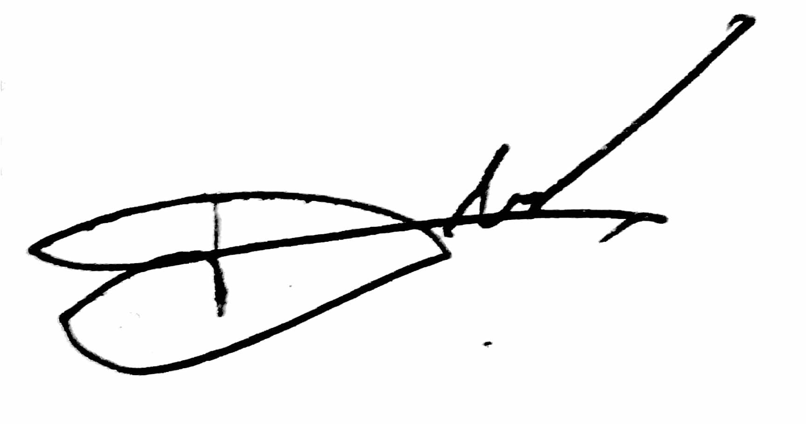

Dominic S. Tagapan
Bldg N, Urban Deca Homes Ortigas, Rosario, Pasig City
09083500529
tagapandominic12@gmail.com
CAREER OBJECTIVES
Enthusiastic fresh graduate with a degree in Computer Engineering seeking to apply my skills and knowledge in a dynamic and growth-oriented company.
SKILLS AND INTEREST
- Computer Literate (Microsoft Word/Excel/Powerpoint)
- Basic Programming Languages
- HTML
- CSS
- JavaScript
- Node
- React
- PostgreSQL
- Web3
- DApps
- Basic AI and IoT Programming
- Can make simple robots
- Line-following robot
- Obstacle Avoiding robot
- Sumobot
- Good communication skills
WORK EXPERIENCE
- Internship
- Probot Corp
- AI Department
- January 2024 - June 2024
- Built prototypes of robots and implemented software codes into it.
- Implemented Artificial Intelligence such as facial recognition and object recognition into the prototype of robots.
EDUCATIONAL BACKGROUND
- College
- Jose Rizal University | Mandaluyong City
- Bachelor of Science in Computer Engineering
- 2020 - 2024
- Senior High School
- Roxas National High School | Roxas, Isabela
- Science, Technology, Engineering, and Technology
- 2018 - 2020
- Junior High School
- Roxas National High School | Roxas, Isabela
- 2014 - 2018
AWARDS AND CERTIFICATIONS
- With Honors | Senior High School | Roxas National High School
- Top Student | 1st Year - 3rd Year College | Jose Rizal University
- NC II Holder | Mechatronics Servicing | TESDA
- Udemy
- The Complete HTML5 Course: From Beginning to Expert
- Python Essentials: Learn Python basics with Coding Exercises
- Learn PHP and MySQL for Web Application and Development
- The Complete 2024 Web Development Bootcamp
ACADEMIC PROJECTS AND WORKS
- Autonomous Mobile Robotics System for Indoor Air Quality
- One of the team leaders responsible for integrating ROS and SLAM Algorithm to enable the autonomy of the robot.
- Automatic Waste Sorting Machine
- Software developer of the team
- Designed and implemented the software code to classify different types of
waste(e.g. Metal, Dry, and Wet).
- Door Security System with Facial Recognition Project
- Built and designed the prototype of the door.
- Implemented Artificial Intelligence to the robot for facial recognition.
AFFILIATIONS
- Institute of Computer Engineers of the Philippines - Jose Rizal University Chapter
- Junior Officer
- 1st Year - 2nd Year College
- Jose Rizal University Drummers
- Senior
- September 2022 - June 2024
CHARACTER REFERENCES
hereby certify that the above mentioned information is true and correct to the best of my knowledge and belief.

DOMINIC S. TAGAPAN